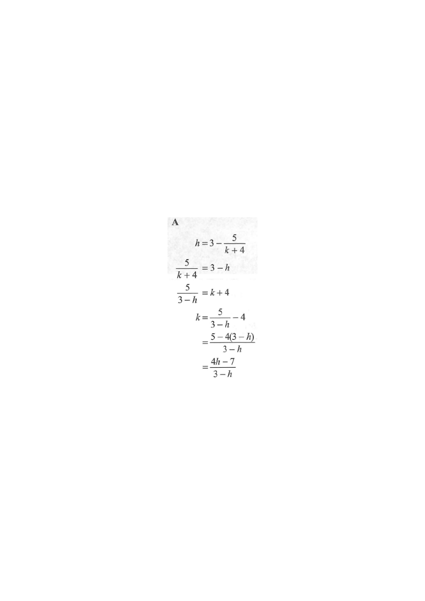

Interactive Figure
Formula map: start with $h = 3 - \dfrac{5}{k+4}$
Given relation
Isolate the fraction
Invert / isolate $k+4$
Simplify
HKDSE 2019 Paper 2 · Q5
If
$$h = 3 - \frac{5}{k+4},$$
then $k =$
- A. $\dfrac{4h-7}{3-h}$
- B. $\dfrac{4h-17}{3-h}$
- C. $\dfrac{4h-7}{3+h}$
- D. $\dfrac{4h-17}{3+h}$

Figure (original exam diagram)
Step-by-step Solution
1Isolate the fraction term
$$h = 3 - \frac{5}{k+4}$$
$$\frac{5}{k+4} = 3 - h$$
Move the fraction to one side: subtract $3$ and flip signs so the fraction term is positive.
2Take the reciprocal of both sides
$$\frac{5}{k+4} = 3-h \;\Longrightarrow\; \frac{k+4}{5} = \frac{1}{3-h}$$
$$\therefore\; k+4 = \frac{5}{3-h}$$
When two fractions are equal, their reciprocals are equal too. Multiply both sides by $5$ to free $k+4$.
3Subtract $4$ to make $k$ the subject
$$k = \frac{5}{3-h} - 4$$
Now $k+4$ equals a single fraction; just move the $+4$ across.
4Combine into a single fraction and simplify
$$k = \frac{5 - 4(3-h)}{3-h} = \frac{5 - 12 + 4h}{3-h} = \frac{4h - 7}{3-h}$$
Use the common denominator $(3-h)$; remember $-4(3-h) = -12+4h$.
Answer: A — $k = \dfrac{4h-7}{3-h}$